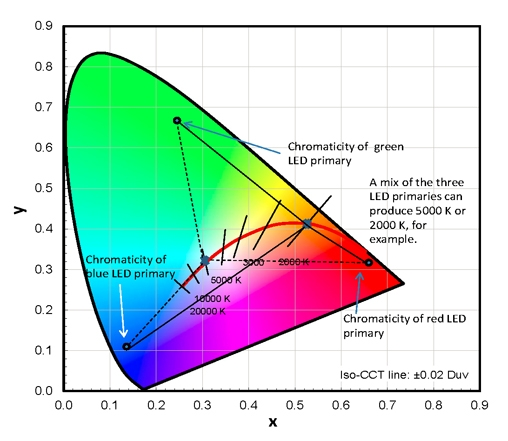
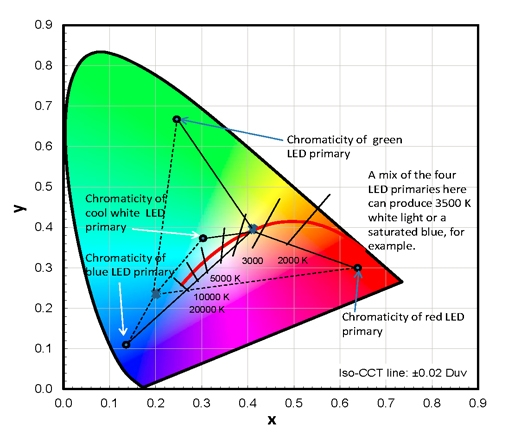

New product capabilities and performance variables require new test methods to be developed, which is important for industry because accurate, repeatable, standardized test methods enable accurate comparisons. Measuring and reporting performance of LED color-tunable luminaires pose a new challenge, since the range of possibilities is near limitless. With variable spectral power distribution (i.e., variable color of light), color metrics and other performance attributes (such as lumen output, power draw, and efficacy) extend across a range for any given luminaire; thus, reporting performance values is more complicated compared to the single values that characterize other LED products.
DOE’s testing of color-tunable products raises a number of questions about existing test methodology and its application to this category of products — questions that will require further discussion and consideration in the near future. Below are some observations about testing and documenting photometric performance of different categories of LED color-tunable products.
Some white-tunable luminaires use two LED primaries: a cool-white and a warm-white. These are often controlled using two dimming controls: one for warmth/coolness of delivered light and the other for intensity of light output. When there are only two LED primaries, there is a linear relationship among color options, because the color can only vary along a straight line connecting the chromaticity (apparent color of light) coordinates of the two LED primaries. Plus, the relationship between color performance, power, output, and efficacy is more predictable because there are a small number of variables that can be changed. This means that a fairly complete picture of performance can be derived from photometric testing at the maximum CCT, minimum CCT, and a mid-range CCT.
")
Other white-tunable luminaires have three or more LED primaries, which theoretically allow them to follow the blackbody curve on a chromaticity diagram very closely. With three or more LED primaries, there are multiple ways to achieve a CCT target such as 2700 K, 3500 K, or 5000 K. As a result, these color-tuning products are less accurately characterized with only the three tests at maximum, minimum, and mid-range. The relationships between color and power, color and output, or color and efficacy are sometimes non-linear and thus more difficult to model using just a few measurements. Consequently, CALiPER’s study of color-tunable luminaires suggests that five to seven testing points, evenly spaced across the CCT range, is likely the minimum necessary to capture the range of performance with reasonable accuracy.
")
Dim-to-warm luminaires may use two, three, or more LED primaries. Products with only two LED primaries deliver a linear color transition such as white to amber, which could be characterized to reasonable accuracy with three photometric tests at the maximum CCT, minimum CCT, and a mid-range CCT. Products with three LED primaries can follow the blackbody curve more precisely, with the potential of mimicking the performance of dimmed incandescent lamps very closely, but this also increases the number of photometric tests needed to accurately characterize performance over the color-tuning range (5 to 7 minimum).

Full-color-tunable luminaires also have three or more LED primaries, such as RGB, RGBA, RGBW, RGBAW, etc. When there are three or more LED primaries, any CCT target (such as 3500 K on the blackbody curve) does not define a unique solution, because that color of light can be created with many different “recipes” of the three or more LED components, as long as the created chromaticity tracks back to the correct CCT on the blackbody curve. Furthermore, the LED primaries can be mixed – or used alone – to produce a distinctly saturated color of light such as red or purple, which falls far off the blackbody curve on a chromaticity diagram. Even if mixed to the exact same chromaticity, two different mixes could create metameric mismatches, making an object appear different in color even though the color of the light appears to match. Because the field of full-color-tunable luminaires is so varied and there is little consistency in algorithms for the color selection, CALiPER does not have specific recommendations for photometry at this time.

The following questions or issues should be considered with regard to photometric testing of color-tunable luminaires:
- At which chromaticity points should the photometric testing be performed? Three, five, or seven points evenly spaced across the CCT range will define a performance curve (as described above), but the measurement points may not cleanly fall on familiar, round CCT values. Would it be helpful to define specific target CCT values (e.g., the 4000 K point nearest the blackbody curve, or the 3000 K point nearest the blackbody curve)?
- If the user selects a CCT target and then uses a dimmer to raise and lower the intensity, will the chromaticity shift? If this is a possibility, it may be necessary to test multiple levels of dimming at each CCT target for SPD information that can be used to calculate color qualities at the dimmed levels. Some specifiers may want to know that color rendering is still acceptable at low ranges of dimming used in a restaurant space, for example, but a complete set of tests at five to seven CCTs may be unnecessary and burdensome for the manufacturer.
- In order to be repeatable, the control settings used for the test need to be recorded. (Example: Channel 1 = 10, Channel 2 = 40, etc., in the DMX universe.) How are those documented for the different control protocols?
- Binning of the LEDs may affect matches between luminaires. Some manufacturers are adding calibration factors for each unit to help ensure consistency.
- As LEDs warm up to a thermal equilibrium, there may be different stabilization rates for different LED primaries. This can mean that color will shift as the primaries warm up, and testing laboratories will want to establish testing procedures that ensure all LED primaries are stable before proceeding with testing. To reduce the testing burden for manufacturers, it is possible that after a single warm-up period, as specified by IES LM-79-08, subsequent points could be measured after the minimum amount of time necessary to determine stabilization mathematically. This approach will apply to white-tuning products, but the additional complexity of full-color-tuning products is likely to require a substantially different procedure.
- Insufficient color mixing has the possibility of producing color artifacts, such as a blue halo around a light beam. Integrating sphere testing is the most common and least expensive approach for collecting color data on luminaires and lamps, but it integrates color from light emitted by the entire product, so it may not pick up color-over-angle artifacts. Some manufacturers have measured as much as a 200 K difference in CCT between the SPD measured in an integrating sphere compared to a goniophotometer, possibly because the goniophotometer was measuring the color of light emitted at a specific angle, as opposed to all angles integrated together. This issue may be exaggerated in luminaires with multiple LED primaries.